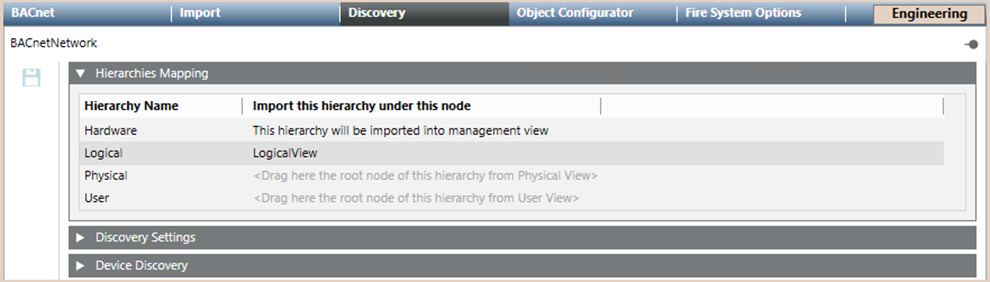
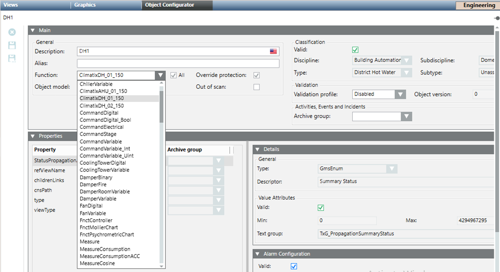

Integrating Climatix Heating System
You can configure the Climatix DH device in a Desigo CC project that does not have the project template Climatix_Template_DH_EN. To do this, you need to make the Climatix DH available in Desigo CC configuration, and associate the proper function to show the expected graphic template.
- You created the logical view. See Creating and Auto-Populating the Logical View.
- System Manager is in Engineering mode.
- To speed configuration, make sure the Desigo CC Transaction Mode is set to
Simpleor the Automatic Switch of Transaction Mode is set toTrue.
The automatic switch setting is recommended. Without it, to re-enable the logs, you need to set the Transaction Mode toLoggingat the end of the configuration procedure.
- In System Browser, select Management View.
- Select Project > Field Networks > [BACnet network].
- Click the Discovery tab.
- Open the Hierarchies Mapping expander and define the logical hierarchy. The suggested field indicates the correct view root to link for the specific hierarchy (logical view).
To assign the logical view, do the following:
a. Select the Manual Navigation check box to retain the Discovery tab.
b. In System Browser, select [logical view].
c. Drag the [logical view] root node from the System Browser tree to the suggested field.
NOTE: The hierarchies mapping configuration cannot be modified after the import of the configuration file. For general background information about the Desigo CC import, see Field Data Import. 
- Import the device using the BACnet Auto Discovery function. For instructions, in 3rd Party BACnet Integration, see Workflow Online Engineering.
- In System Browser, select [logical view].
- Select the aggregator corresponding to the name of each Climatix AHU device.
- Click the Object Configurator tab, and associate the function Climatix_AHU_01_150 or Climatix_DH_02_150 to any one of them. The function you decide to associate depends on the graphic template you want to use (see Climatix Heating System Library).

- Click Save
 .
.